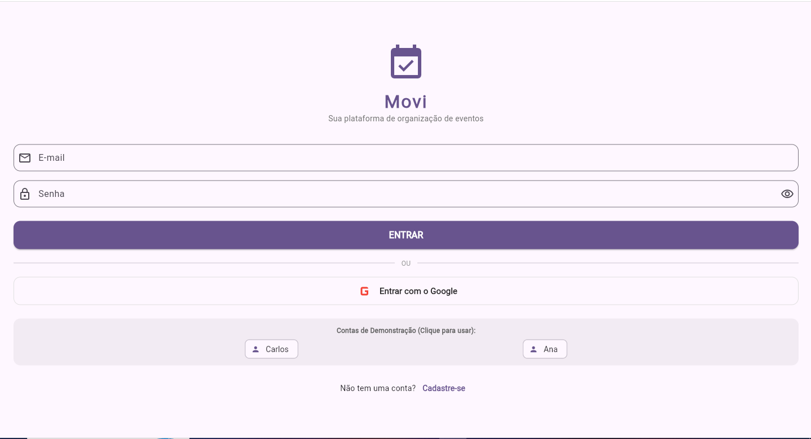
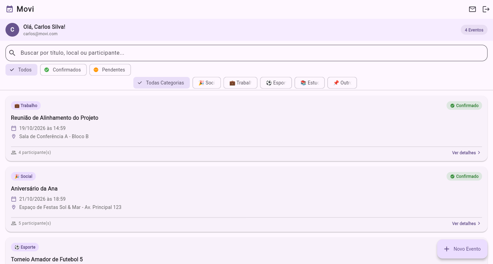
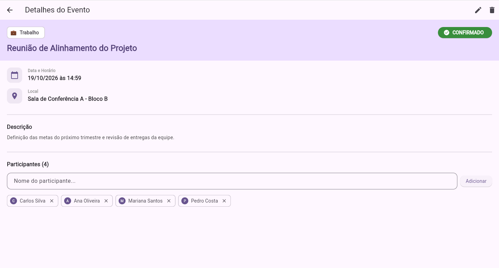
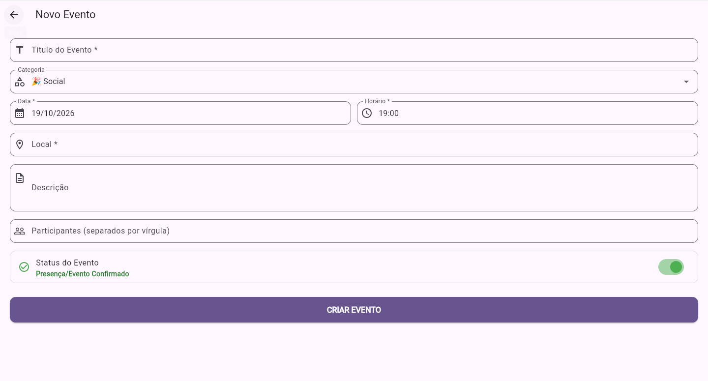
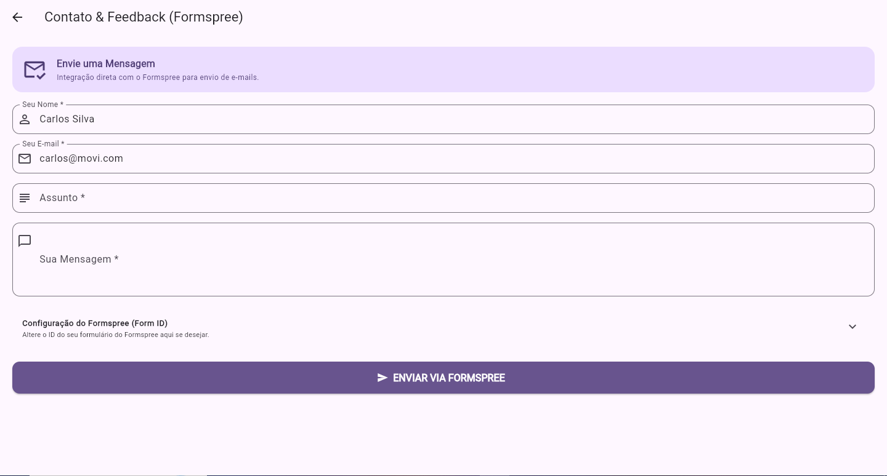

1. Apresentação do Aplicativo
O Movi é uma aplicação mobile desenvolvida em Flutter focada no planejamento, criação e organização de eventos. O sistema permite cadastrar detalhes como data, horário, local, descrição e lista de participantes, além de permitir a consulta organizada de eventos agendados e confirmações de presença.

2. Objetivo e Público-Alvo
- Objetivo: Centralizar o gerenciamento de eventos, fornecendo uma interface intuitiva para criar, consultar e acompanhar compromissos e presenças.
- Público-Alvo: Organizadores de eventos, empresas, grupos acadêmicos, estudantes e qualquer pessoa que necessite agendar e gerenciar encontros de forma estruturada.
3. Tecnologias Utilizadas
- Linguagem: Dart (>= 3.0.0)
- Framework: Flutter (>= 3.x)
- Backend / Banco de Dados: Firebase (Firestore / Authentication) ou SQLite para armazenar eventos e participantes.
- Serviços de Terceiros: Formspree (para envio de e-mails de contato e feedback).
- Gerenciamento de Estado: Provider / Bloc / setState
- Dependências Adicionais:
intl(para formatação de data e hora) e seletores de data/hora.
4. Requisitos para Executar o Projeto
- Flutter SDK instalado e configurado nas variáveis de ambiente.
- Dart SDK em versão compatível.
- Android Studio ou VS Code com extensões Flutter e Dart instaladas.
- Emulador Android/iOS ou dispositivo físico conectado via depuração USB.
- Git instalado.
5. Passo a Passo para Instalação
- Clonar o repositório:
git clone https://github.com/FGM09/Moviapp.git cd Moviapp - Instalar as dependências do Flutter:
flutter pub get - Verificar o ambiente:
flutter doctor - Executar a aplicação:
flutter run
6. Estrutura de Pastas
A arquitetura dentro da pasta lib/ segue a divisão por responsabilidades:
lib/
├── main.dart # Inicialização da aplicação e rotas globais
├── config/ # Configuração de temas, cores e rotas
├── controllers/ # Controladores e lógica de negócios do Movi
├── models/ # Modelos de dados (Event, Participant, User)
├── services/ # Comunicação com Firebase/SQLite e Formspree
├── views/ # Interface do Usuário (Screens)
│ ├── auth/ # Telas de Login e Criar Conta
│ ├── events/ # Cadastro, Listagem e Detalhes de Eventos
│ ├── feedback/ # Tela de Contato & Feedback (Formspree)
│ └── profile/ # Perfil do usuário
└── widgets/ # Componentes reutilizáveis (Cards, Inputs, etc.)7. Explicação das Principais Telas
- Lista de Eventos (Home): Exibe os eventos com busca por título/local, filtros por status (Todos, Confirmados, Pendentes) e categorias (Trabalho, Social, Esporte, Estudos, Outros).
- Detalhes do Evento: Exibe data/horário, local, descrição, status de confirmação e a lista de participantes com opção de adição/remoção rápida.
- Novo Evento: Formulário com título, categoria, data, horário, local, descrição, inserção de participantes e chave de status do evento.
- Contato & Feedback: Módulo para envio direto de mensagens via integração com o Formspree.




8. Explicação do Login e Cadastro
Módulo localizado em lib/views/auth/:
- Login: Autentica o usuário por e-mail e senha, com suporte a login social via Google e atalhos rápidos para contas de demonstração (Carlos e Ana).
- Criar Conta: Permite o cadastro com Nome Completo, E-mail, Senha e Confirmação de Senha.
- Controle de Sessão: Validação de autenticação ao iniciar a aplicação.
9. Estrutura do Banco de Dados
Estrutura dos documentos da coleção/tabela de eventos (events):
// Coleção / Tabela: events
{
"id": "string",
"title": "string",
"category": "string", // Social, Trabalho, Esporte, Estudos, Outros
"description": "string",
"location": "string",
"date": "string", // Ex: "19/10/2026"
"time": "string", // Ex: "14:59"
"status": "string", // Confirmado, Pendente
"participants": ["Carlos Silva", "Ana Oliveira", "Mariana Santos"],
"createdAt": "timestamp"
}10. Como Cadastrar, Editar e Excluir Informações
- Cadastrar Evento: Acesse a tela "Novo Evento", preencha o formulário e clique em
CRIAR EVENTO. - Editar Evento: Na tela "Detalhes do Evento", utilize o ícone de lápis (cabeçalho) para alterar as informações.
- Excluir Evento: Clique no ícone da lixeira no cabeçalho da tela de detalhes para excluir o evento.
- Adicionar/Remover Participante: Na tela de detalhes, insira o nome no campo "Participantes" ou clique no "X" junto ao nome para remover.
11. Como Alterar Cores, Logo e Nome do Aplicativo
A. Alterar Cores
O aplicativo utiliza como tom principal a cor roxa (#6B5B95 ou #5E5083). Edite no arquivo lib/config/theme.dart:
ThemeData appTheme = ThemeData(
primaryColor: Color(0xFF5E5083), // Cor roxa padrão do Movi
colorScheme: ColorScheme.fromSeed(seedColor: Color(0xFF5E5083)),
scaffoldBackgroundColor: Color(0xFFF9F6FC),
);B. Trocar o Logo
Substitua o ícone de calendário/logo na pasta assets/images/logo.png mantendo a declaração no pubspec.yaml.
C. Alterar o Nome do Aplicativo
- Android: Altere o atributo
android:label="Movi"no arquivoandroid/app/src/main/AndroidManifest.xml. - iOS: Modifique a chave
CFBundleDisplayNameparaMovino arquivoios/Runner/Info.plist.
12. Como Adicionar ou Alterar uma Tela
- Crie um novo arquivo em
lib/views/events/nova_tela.dart. - Defina a estrutura do Widget (ex:
class NovaTela extends StatelessWidget). - Mapeie a nova rota dentro de
lib/config/routes.dart:'/nova-tela': (context) => NovaTela(), - Chame a navegação na tela desejada:
Navigator.pushNamed(context, '/nova-tela');
13. Como Adicionar ou Alterar um Campo no Banco de Dados
- Abra o modelo de dados em
lib/models/event.dart. - Adicione a nova propriedade desejada (ex:
final String category;). - Atualize o construtor e os métodos
toMap()/fromMap()(outoJson/fromJson). - Ajuste a interface do formulário para permitir a inserção e leitura desse novo campo.
14. Como Gerar uma Nova Versão do Projeto
1. Atualize a versão no arquivo pubspec.yaml:
version: 1.0.1+2 # 1.0.1 (nome da versão), +2 (código do build)2. Execute o comando de geração do executável:
# Para gerar o arquivo APK de instalação
flutter build apk --release
# Para gerar o App Bundle para a Play Store
flutter build appbundle --release15. Solução de Problemas Comuns
- Erro de Build/Cache: Execute
flutter cleane em seguidaflutter pub get. - Formatação de Data/Hora: Verifique se a biblioteca
intlestá configurada corretamente para o idioma padrão (pt_BR). - Erro de envio no Formspree: Verifique se o ID do formulário está configurado corretamente na tela de Feedback.